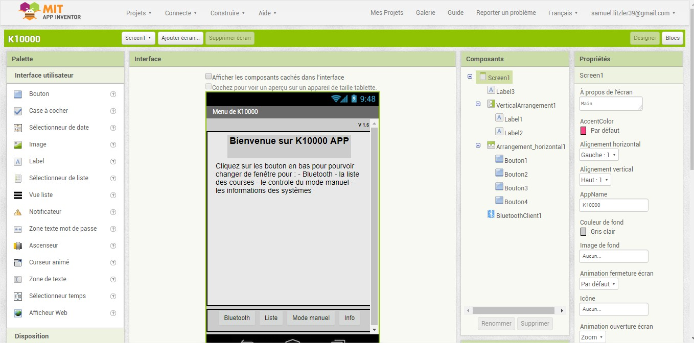
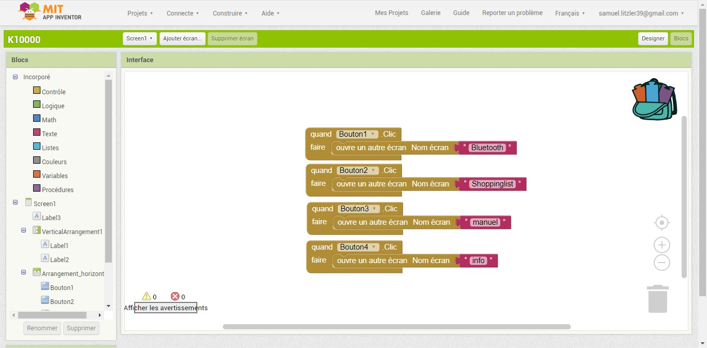
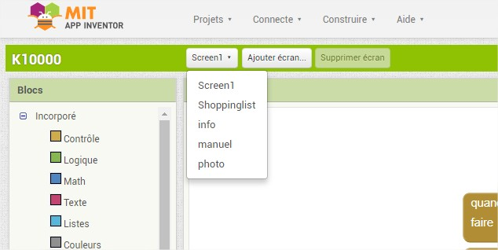
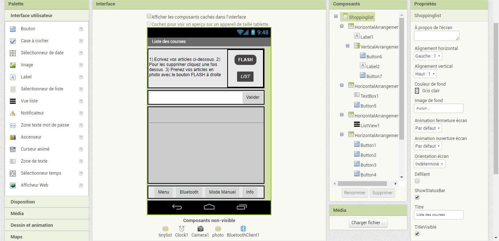
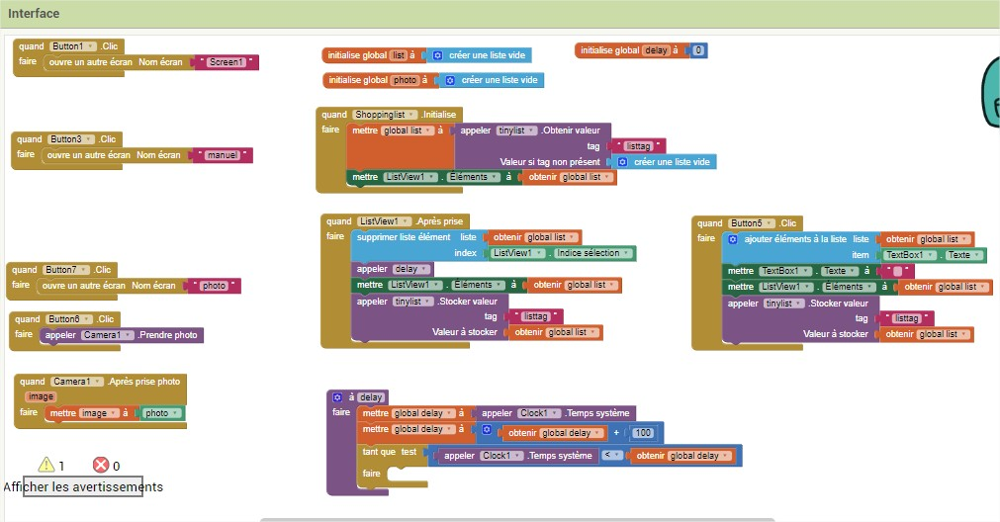
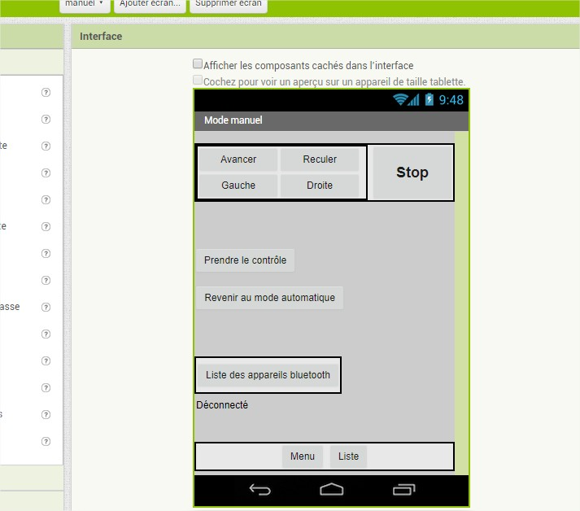
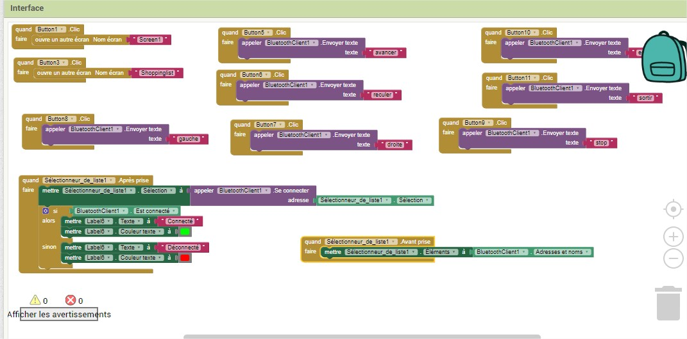
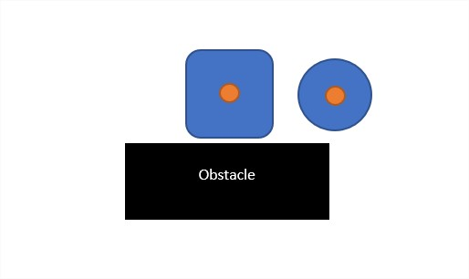
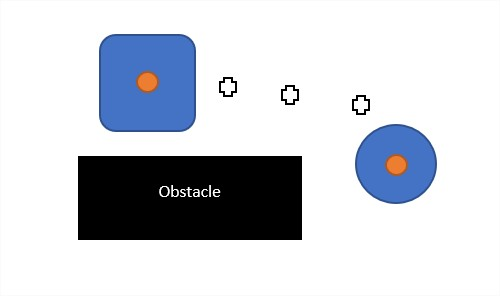
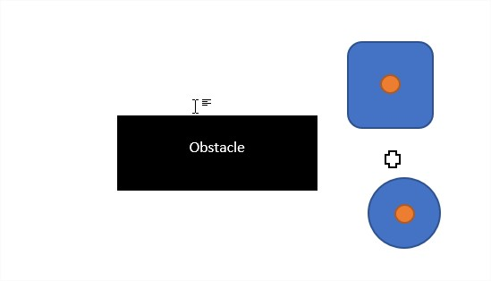

/*****************************
* Définition des variables: *
*****************************/
//biblioteques
#include SoftwareSerial.h
//Définition des variables:
//Variables distance
long duration;
int distance;
int safetyDistance;
int distanceCm, distanceInch;
String messageRecu;
String messageEnv;
SoftwareSerial HC06(0,1); //pin du module bluetooth
//Capteurs à contacts et ultrasons
//Contact devant
long Contact1 = 4; //capteur a contact1
long EtatContact1 = LOW;
//Contact droit
long Contact2 = 5; //capteur a contact1
long EtatContact2 = LOW;
//Contact gauche
long Contact3 = 6; //capteur a contact1
long EtatContact3 = LOW;
/*Allumer le cadi
long On = ;
long EtatButtonOn = LOW;
*/
//ultrasons devant
const int trigPin = 2; //pin trig moteur ultrasons 1
const int echoPin = 3; //pin echo moteur ultrasons 1
//Moteurs
const int Moteur1 = 11; //pin PWN (L293D) moteur1 vitesse
const int Mot11 = 12; //pin input1 (L293D) moteur1 sens de rotation
const int Mot12 = 13; //pin input2 (L293D) moteur1 sens de rotation
const int Moteur2 = 10; //pin PWN (L293D) moteur2 vitesse
const int Mot21 = 8; //pin input3 (L293D) moteur2 sens de rotation
const int Mot22 = 9; //pin input4 (L293D) moteur2 sens de rotation
float msgSend = 0;
int i = 0;
void setup() {
Serial.begin(9600);
HC06.begin(9600);
//moteurs
pinMode(Moteur1, OUTPUT);
pinMode(Mot11,OUTPUT);
pinMode(Mot12,OUTPUT);
pinMode(Moteur2, OUTPUT);
pinMode(Mot21, OUTPUT);
pinMode(Mot22, OUTPUT);
//contact
pinMode(Contact1, INPUT);
pinMode(Contact2, INPUT);
pinMode(Contact3, INPUT);
//ultrasons
pinMode(trigPin,OUTPUT);
pinMode(echoPin,INPUT);
}
void bluetooth() { //boucle bluetooth pour éviter que il y est des boucles dans des boucles
do{
while(HC06.available()) //définition de variable quand le bluetooth est allumé
{
delay(3); //petite attente
char c = HC06.read(); //definition de la variable c
messageRecu += c; //definition de la variable messageRecu
}
if (messageRecu == "avancer")
{
digitalWrite(12, LOW );//sens
digitalWrite(13, HIGH );//sens
analogWrite(11, 255); //vitesse
digitalWrite(9, HIGH );
digitalWrite(8, LOW );
analogWrite(10, 255);
Serial.println(messageRecu);
}
if (messageRecu == "reculer")
{
digitalWrite(12 , HIGH );//sens
digitalWrite(13 , LOW );//sens
analogWrite(11 , 255); //vitesse
digitalWrite(9, LOW );
digitalWrite(8, HIGH );
analogWrite(10, 255);
Serial.println(messageRecu);
}
if (messageRecu == "gauche")
{
digitalWrite(13 , LOW );//sens
digitalWrite(12 , HIGH );//sens
analogWrite(11 , 200); //vitesse
digitalWrite(8, LOW );
digitalWrite(9, HIGH );
analogWrite(10, 255);
Serial.println(messageRecu);
}
if (messageRecu == "droite")
{
digitalWrite(13 , HIGH );//sens
digitalWrite(12 , LOW );//sens
analogWrite(11 , 200); //vitesse
digitalWrite(9, LOW );
digitalWrite(8, HIGH );
analogWrite(10, 255);
Serial.println(messageRecu);
}
if (messageRecu == "stop")
{
analogWrite(11, 0); //vitesse
analogWrite(10, 0);
Serial.println(messageRecu);
}
if(messageRecu == "sortir")
{
messageRecu="";
i=10;
}
messageRecu="";
}while(i<10); //tant que i est inférieur à 10
delay(1000);
}
void loop() {
/**********************************************************************
* MOTEURS/BLUETOOTH *
**********************************************************************/
//RENTRER DANS BOUCLE BLUETOOTH
while(HC06.available())
{
delay(3); //petite attente
char c = HC06.read(); //definition de la variable c
messageRecu += c; //definition de la variable messageRecu
}
Serial.println(messageRecu);
if(messageRecu == "entrer")
{
analogWrite(11, 0); //on arrete le moteur
analogWrite(10, 0);
messageRecu="";
bluetooth(); //appele de la boucle bluetooth
i=0; //redefinie la viriable pour pouvoir refaire cette action plussieurs fois
messageRecu="";
}
/*******************
* 1) CAPTEUR A *
* CONTACT *
*******************/
EtatContact1 = digitalRead(Contact1);
EtatContact2 = digitalRead(Contact2);
EtatContact3 = digitalRead(Contact3);
if(EtatContact1 == LOW)
{
analogWrite(Moteur1 , 0); //vitesse
analogWrite(Moteur2 , 0); //vitesse
Serial.write(1);
delay(5000);//attendre 1 seconde
}
if(EtatContact2 == LOW)
{
analogWrite(Moteur1 , 0); //vitesse
analogWrite(Moteur2 , 0); //vitesse
Serial.write(1);
delay(5000);//attendre 1 seconde
}
if(EtatContact3 == LOW)
{
analogWrite(Moteur1 , 0); //vitesse
analogWrite(Moteur2 , 0); //vitesse
Serial.write(1);
delay(5000);//attendre 1 seconde
}
else{}
/*******************
* ULTRASON *
*******************/
// Clears the trigPin
digitalWrite(trigPin, LOW);
delayMicroseconds(2);
// Sets the trigPin on HIGH state for 10 micro seconds
digitalWrite(trigPin, HIGH);
delayMicroseconds(10);
digitalWrite(trigPin, LOW);
// Reads the echoPin, returns the sound wave travel time in microseconds
duration = pulseIn(echoPin, HIGH);
// Calculating the distance
distance= duration*0.034/2;
safetyDistance = distance;
if (safetyDistance>60 )
{
digitalWrite( Mot11 , LOW );//sens en avant
digitalWrite( Mot12 , HIGH );//sens en avant
analogWrite(Moteur1 , 252); //vitesse
digitalWrite( Mot21 , LOW );//sens en avant
digitalWrite( Mot22 , HIGH );//sens en avant
analogWrite(Moteur2 , 255); //vitesse
msgSend = 6;
HC06.print(String(msgSend));
}
else if (safetyDistance>40 && safetyDistance<60)
{
digitalWrite( Mot11, LOW );//sens
digitalWrite( Mot12, HIGH );//sens
analogWrite(Moteur1, 140); //vitesse
digitalWrite( Mot21 , LOW );//sens
digitalWrite( Mot22 , HIGH );//sens
analogWrite(Moteur2 , 140); //vitesse
msgSend = 4;
HC06.print(String(msgSend));
}
else if (safetyDistance>20 && safetyDistance<40)
{
digitalWrite( Mot11 , LOW );//sens
digitalWrite( Mot12 , HIGH );//sens
analogWrite(Moteur1 , 80); //vitesse
digitalWrite( Mot21 , LOW );//sens
digitalWrite( Mot22 , HIGH );//sens
analogWrite(Moteur2 , 80); //vitesse
msgSend = 4;
HC06.print(String(msgSend));
}
else if (safetyDistance>10 && safetyDistance<20)
{
digitalWrite( Mot11 , LOW );//sens
digitalWrite( Mot22 , HIGH );//sens
analogWrite(Moteur1 , 40); //vitesse
digitalWrite( Mot21 , LOW );//sens
digitalWrite( Mot22 , HIGH );//sens
analogWrite(Moteur2 , 40); //vitesse
msgSend = 2;
HC06.print(String(msgSend));
}
else if (safetyDistance <=10)
{
analogWrite(Moteur1, 0); //vitesse
analogWrite(Moteur2, 0); //vitesse
msgSend = 1;
HC06.print(String(msgSend));
}
else
{ msgSend = 10;
HC06.print(String(msgSend));
}
Serial.println(safetyDistance);
if (messageRecu == "avancer")
{
messageRecu="";
}
if (messageRecu == "reculer")
{
messageRecu="";
}
if (messageRecu == "droite")
{
messageRecu="";
}
if (messageRecu == "gauche")
{
messageRecu="";
}
if (messageRecu == "stop")
{
messageRecu="";
}
if (messageRecu == "sortir")
{
messageRecu="";
}
}// fermer la boucle loop
Ces messages viennent de l'application que j'ai faite avec appinventor2.


Comme je l'ai dit précédemment, il y a plusieurs écrans:

Notre deuxième écran est où l'on peut écrire sa liste de course et prendre des photos des codes barres... Cela remplace la scanette prévu au début du projet.
On peut voir aussi qu'il y a des composants non visibles juste en dessous de l'écran, ces composants seront utiles dans la partie du code.
On peut voir aussi qu'il y a des composants non visibles juste en dessous de l'écran, ces composants seront utiles dans la partie du code.

Maintenant cela se complique. J'ai copié ces blocs dans un tutoriel sur appinventor.
Le premier gros bloc "quand shoppinglist .initialise" sert au moment où l'on arrive sur cet écran: il met ce que l'on avait écrit auparavant (liste de course).
Le bloc juste en dessous sert à supprimer la liste de courses en cliquant sur ce que l'on a écrit (une vidéo plus loin le montre)
Le bloc encore en dessous sert à définir une variable delay, j'ai voulu mettre un petit temps d'attente à rester appuyé pour supprimer le produit que l'on a écrit, mais cela ne marche pas, car le bloc ici met un temps d'attente entre le moment où l'on clique et le moment où le message est effacé.
Le bloc de droite sert à écrire la liste de course et la mettre en mémoire pour ne pas l'effacer quand l'on change d'écran.
Et le bloc de gauche devait servir à mettre les photos dans l'écran dédié, mais cela ne marche pas et je n'ai pas trouvé de dictatiel dessus.
Le premier gros bloc "quand shoppinglist .initialise" sert au moment où l'on arrive sur cet écran: il met ce que l'on avait écrit auparavant (liste de course).
Le bloc juste en dessous sert à supprimer la liste de courses en cliquant sur ce que l'on a écrit (une vidéo plus loin le montre)
Le bloc encore en dessous sert à définir une variable delay, j'ai voulu mettre un petit temps d'attente à rester appuyé pour supprimer le produit que l'on a écrit, mais cela ne marche pas, car le bloc ici met un temps d'attente entre le moment où l'on clique et le moment où le message est effacé.
Le bloc de droite sert à écrire la liste de course et la mettre en mémoire pour ne pas l'effacer quand l'on change d'écran.
Et le bloc de gauche devait servir à mettre les photos dans l'écran dédié, mais cela ne marche pas et je n'ai pas trouvé de dictatiel dessus.

Le dernier écran sert à contrôler le cadi avec les touches de contrôle. Cela marche, mais si l'on quitte cet écran il faut de nouveau ce connecté en bluetooth à l'application et donc redémarrer le cadi. Je n'ai pas trouvé de solution à ce problème.

Et ici le code, c'est où l'on envoie les messageRecu. Le bloc en bas sert à donner la liste de connection bluetooth et celui de gauche sert à afficher si le bluetooth est connecté ou non.

Pendant le montage du caddie j'ai eu un problème avec le bluetooth. En effet quand la boucle bluetooth est finie d'éxécutée, elle revient directement dans la boucle où elle s'était arrêtée, donc pour contrer cela j'ai dû faire une boucle do...while avec une bonne condition pour que la boucle soit finie que quand l'on appuie sur le bouton "revenir au mode automatique". Pour cela j'ai défini une variable "i".
Video de l'application:
Voila de cadi terminé :
Visualisation du fonctionnement
de la centrale inertielle
Au début la les deux centrales inertielle doivent être définie au même endroit puis l'utilisateur peut commencer à faire ces courses.

L'utilisateur laisse des informations de position derriere lui et ces informations sont envoyée à l'arduino via bluetooth ou onde radio.

Et le cadi donc fait les mêmes positions que l'utilisateur, et ainsi de suite.

de la centrale inertielle